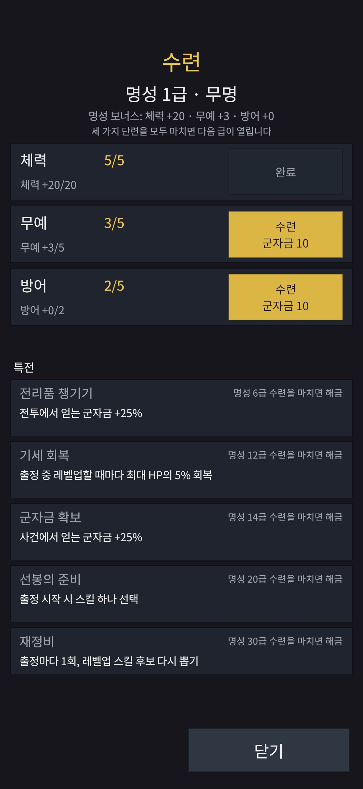
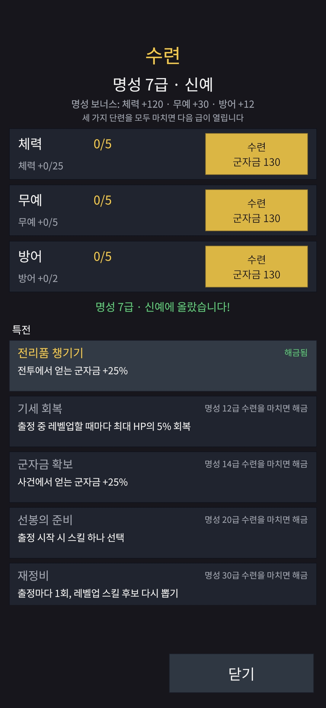

작업 목표
계급 40단계를 없애고, 참고 게임처럼 한 급수 안에서 세 가지 능력을 모두 채워야 다음 급수가 열리는 게이트 방식의 성장축으로 바꾸는 것. 이름은 '계급' 대신 명성(名聲), 행위와 화면 이름은 수련으로 정했다. 데이터·서버·클라이언트가 모두 바뀌는 작업이라 조사 → 결정 → 구현 → 시뮬레이션 → 재배포 → 실기기 확인을 한 흐름으로 끝내는 것이 목표였다.
작업 결과
조사 보고서부터 병합까지 하루 안에 끝났다. 명성 30급 · 칭호 10개 · 수련 450단계가 데이터와 서버, 수련 화면에 들어갔고, 개발 서버를 재배포한 뒤 Galaxy A16에서 10개 항목을 모두 확인했다.


계급 4개 × 10단계가 명성 30급 × 세 갈래 × 5단계로 바뀌었다.
무명 · 두각 · 신예 · 맹장 · 용장 · 호장 · 명장 · 상승장군 · 일기당천 · 만인지적. 3급마다 하나씩 바뀐다.
Unity 에디터 테스트 332개까지 모든 커밋이 깨끗한 작업 트리에서 통과했다.
이전 버전의 업데이트 화면부터 수련, 급수 상승, 환급 합계까지 Galaxy A16에서 확인했다.
왜 계급을 버리고 명성으로 갔나
계급은 두 가지 문제가 있었다. 하나는 양이다. 참고한 게임은 73급 · 2,790회 업그레이드로 끝까지 가는데, 조자룡의 계급은 40번이면 끝났다. 다른 하나는 문맥이다. 조자룡은 이미 장군인데 보졸부터 시작하는 것은 이야기와 맞지 않았다.
계급 40단계
보졸 → 기병 → 교위 → 장군. 단계마다 체력·공격·방어가 한꺼번에 오르고, 다음 단계를 사면 끝이었다. 선택할 것이 없었다.
명성 30급 · 세 갈래 수련
급마다 체력 · 무예 · 방어 세 갈래를 각각 5단계까지 수련한다. 어느 갈래를 먼저 올릴지는 플레이어의 선택이고, 셋을 다 채워야 다음 급이 열린다.
이름은 명성, 행위는 수련
'위명'은 낯설어 빼고 '명성'으로 정했다. 칭호는 무명에서 시작해 만인지적으로 끝난다. 마지막 칭호는 '만인적' 대신 더 익숙한 '만인지적'을 골랐다.
명성과 수련의 구조
수치는 모두 잠정이다. 다만 "1장이 끝날 때 10~12급" 이라는 목표 하나를 고정하고 나머지를 거기서 역산했다.
비용 곡선
한 단계의 비용은 급수에 따라 20g − 10 군자금이다. 1급은 한 단계에 10, 30급은 590. 한 급을 끝내는 데 15번 수련하므로 G급까지 끝내는 데 드는 누적 비용은 150·G²가 된다.
- 10급 완료: 15,000 군자금 (옛 계급 18단계와 같은 돈)
- 30급 완료: 135,000 군자금 (옛 계급 40단계 129,250과 거의 같음)
능력치는 급수 총량을 단계에 나눠 준다
처음에는 단계마다 정수 능력치를 줄 생각이었는데, 방어가 문제였다. 이 게임의 피해는 공격 − 방어로 빼는 방식이라 방어 1이 체력 1보다 훨씬 크다. 단계마다 방어 1을 주면 10급에서 방어가 옛 곡선의 두 배 이상이 된다.
그래서 급수마다 갈래별 총량을 정하고, 단계 i에서는 floor(i × 총량 / 5)만큼 준다. 방어 총량이 2인 급수는 0, 0, 1, 1, 2로 오른다.
특전은 그 급수의 수련을 마치면 열린다
전리품 챙기기, 기세 회복, 군자금 확보, 선봉의 준비, 재정비 다섯 가지 특전은 옛 계급에서 쓰던 돈과 거의 같은 지점(6 · 12 · 14 · 20 · 30급)에 두었다. "6급에서 해금"이 6급에 들어갈 때인지 6급을 마칠 때인지는 구현 중에 애매해져서, 비용 수치와 마지막 급의 특전이 성립하는 쪽인 마칠 때로 확정했다. 화면 문구도 「명성 6급 수련을 마치면 해금」으로 맞췄다.
데이터 · 서버 · 화면을 한 커밋으로 바꿨다
계급 단계 하나를 정수로 들고 다니던 곳이 생각보다 많았다. 시작 능력치 조합, 서버의 승급 API, 두 개의 시뮬레이터, 골든 벡터, 클라이언트 모델, 스모크 테스트. 바꿀 내용은 깊지 않았지만 넓었다.
데이터와 규칙
Data · Runranks.csv를 fame_grades.csv(급수당 한 행: 칭호, 단계 수, 비용, 갈래별 총량, 특전)로 바꾸고, 수련의 게이트 규칙을 서버 · 시뮬레이터 · 클라이언트가 함께 쓰는 순수 함수로 두었다. 계정 테이블 버전은 v3 → v4.
서버 계약과 저장
Server승급 서비스를 명성 서비스로 바꾸고, 요청에는 갈래와 화면이 보고 있던 급수·단계를 함께 보내 오래된 화면의 요청을 거부한다. 세 갈래가 모두 차면 같은 쓰기 안에서 다음 급으로 넘어간다. 저장은 ranks 테이블을 지우고 fame 테이블(급수와 갈래별 단계)을 만드는 마이그레이션 하나로 끝냈다.
수련 화면
Client헤더(명성 n급 · 칭호) → 보너스 합계 → 세 갈래 행(단계, 갈래 보너스 진행, 수련 버튼) → 급수 상승 공지 → 특전 카드 순서다. 옛 계급 화면의 40칸 트랙보다 단순해졌다.
왜 한 커밋인가
RuleUnity 클라이언트는 서버 계약을 파일 경로로 직접 참조한다. 데이터와 서버만 먼저 커밋하면 그 커밋에서 클라이언트가 컴파일되지 않는다. 임시 어댑터를 넣는 방법도 있었지만 버릴 코드이고 의미도 어긋나서(옛 단계를 급수로 읽는 식), 계약 변경 하나와 그 소비자 전부를 한 커밋으로 묶었다. 커밋은 커졌지만 단위로는 더 일관됐다.
1,000계정 시뮬레이션과 실기기
코드를 바꾼 뒤 계정 시뮬레이터를 돌려 1장 끝에서의 급수를 확인하고, 난이도 기준값을 다시 쟀다. 그다음 개발 서버를 재배포하고 폰에서 확인했다.
1장 끝에서 몇 급인가
| 스테이지 | 첫 클리어 (중앙값 / 상위 10%) | 그때의 명성 |
|---|---|---|
| 1-1 공손찬 구출 작전 | 6 / 10번째 출정 | 7급 / 10급 |
| 1-2 계교로 향하는 명령 | 11 / 15번째 | 10급 / 12급 |
| 1-3 계교의 퇴로 | 12 / 20번째 | 11급 / 13급 |
시뮬레이터의 수련 정책은 "가장 싼 갈래 먼저, 같으면 단계가 낮은 갈래, 그다음 체력 → 무예 → 방어"다. 1-3의 상위 10%가 16에서 20번째 출정으로 늦어진 것은 느린 꼬리이고, 밸런싱 단계로 넘겼다.
재배포와 Galaxy A16
- 마이그레이션으로
ranks가 사라지고fame이 생겼다. 개발 서버의 플레이어는 모두 초기화했다. - 앱 최소 버전을 1.5.0으로 올려, 설치돼 있던 1.4.0 앱은 업데이트 화면으로 막히는 것을 먼저 확인했다.
- 새 계정으로 수련 화면 → 방어 두 번(능력치 +0이지만 실패처럼 보이지 않는지) → 한 갈래 완료 → 세 갈래 완료 → 2급 공지 → 출정의 시작 능력치 → 난이도 표시 → 상자 환급 합계까지 10개 항목이 모두 기대대로였다.
- 세션 중 고친 것은 없다. 폰에서 확인한 빌드와 병합한 코드가 같다.
작업하면서 알게 된 것
구현 자체보다 결정의 경계에서 배운 것이 많았다.
돈을 냈는데 숫자가 안 오르면 버그로 보인다
방어 총량을 단계에 나누면 5단계 중 3단계는 방어가 +0이다. 서버는 맞는데 플레이어는 실패로 읽는다. 그래서 갈래 행에 「방어 +1/2」처럼 이 급수에서의 진행을 함께 보여주기로 했다. 숫자를 바꾼 게 아니라 보여 주는 방식을 바꿔 해결한 문제다.
이름을 반만 바꾸면 영원히 남는다
처음 권고는 서버 서비스 이름을 '계급'으로 두고 메서드만 바꾸자는 것이었다. 한 시간을 아끼는 대신 데이터 · 테이블 · 텍스트 키가 전부 '명성'인데 API만 '계급'인 상태가 영구히 남는다. 아직 운영 서버가 없어 호환 비용이 0인 지금이 이름을 바꿀 유일하게 싼 시점이었다.
"n급에서 해금"은 두 가지로 읽힌다
급수가 한 지점에서 15단계짜리 구간으로 바뀌자 "6급에서"가 들어갈 때인지 마칠 때인지 갈렸다. 코드와 화면이 다른 해석을 쓰기 전에 못박아야 했다. 구조가 바뀌면 같은 데이터의 뜻이 바뀔 수 있다.
체크 명령은 파이프하지 않는다
마지막 문서 커밋에서 에이전트가 check | tail -1로 결과를 줄여 보려 했다. 파이프는 마지막 명령의 상태만 보고하므로 실패가 묻힐 수 있다. 결과는 통과였고 커밋 훅이 다시 돌아 문제는 없었지만, 다음 파트 지시문에 규칙을 한 줄 더 적었다.
운영 명령은 "어느 기계에서"가 먼저다
플레이어 초기화 함수를 게임 서버 호스트에서 선언했다가 비밀 파일이 없어 실패했다. 그 함수는 Mac에서 선언해 데이터베이스 기계로 ssh하는 것이었다. 이후 단계마다 실행 기계를 맨 앞에 적기로 했고, 자주 쓰는 선언문은 메모리에 올려 두었다.
조사 보고서가 구현 시간을 줄였다
구현 전 읽기 전용 조사에 에이전트 넷을 보내 데이터 · 서버 · 클라이언트 · 시뮬레이터를 나눠 보게 했다. 초안의 오류 여섯 개와 방어 인플레이션 위험이 거기서 나왔다. 조사에 쓴 시간보다 구현에서 되돌리지 않은 시간이 컸다.
결정은 사람이, 실행은 AI 에이전트가
조사 보고서의 열세 개 질문에 답하는 것부터 시작했다. 에이전트는 권고안을 먼저 내고, 사람은 그중 세 군데를 바꿨다(서비스 이름, +0 단계의 표시, 미룰 항목). 그 뒤 구현 · 테스트 · 시뮬레이션 · APK 빌드는 에이전트가, 재배포 명령 실행과 폰 확인은 사람이 했다.
AI 에이전트가 맡은 일
- 읽기 전용 조사 보고서(에이전트 4개 병렬)와 비용 추정
- 데이터 · 규칙 · 서버 · 마이그레이션 · 클라이언트 구현과 테스트
- 1,000계정 시뮬레이션과 난이도 기준값 재측정
- 모든 커밋의 깨끗한 작업 트리 검증, APK 빌드
- 개발 서버 스모크 테스트와 PR · CI
사람이 직접 한 일
- 구조 · 이름 · 칭호 · 수치 방향 결정과 열세 개 질문의 답
- 재배포(push, 이미지, 마이그레이션, 플레이어 초기화, 원격 설정)를 한 단계씩 실행
- Galaxy A16 세션 10개 항목 확인
- 병합과 문서 사본 교체
성장축 하나를 하루에 갈아 끼웠다
조사 보고서가 오전에 올라왔고, 오후에 병합했다. 데이터 · 서버 · 클라이언트가 모두 바뀌었지만 폰에서 고친 것은 없었다.
이번 작업의 진행 순서
기획서 초안 (명성 · 수련)
↓
읽기 전용 조사 → 초안 오류 6개 · 위험 1개
↓
열세 개 질문에 답하고 그룹 분할 승인
↓
데이터 · 서버 · 화면을 한 커밋으로
↓
1,000계정 시뮬레이션 → 1장 끝 11급 / 13급
↓
개발 서버 재배포 · Galaxy A16 10항목
↓
병합폰에서 확인한 빌드가 그대로 병합됐다. 잠정 수치도 시뮬레이션 뒤 고치지 않았다.
3줄 요약
- 계급 40단계를 명성 30급 · 세 갈래 × 5단계 수련으로 바꿨다. 셋을 다 채워야 다음 급이 열리고, 칭호는 무명에서 만인지적까지 열 개다.
- 데이터 · 서버 계약 · 저장 테이블 · 수련 화면을 한 커밋으로 바꾸고, 1,000계정 시뮬레이션으로 1장 끝 11급(중앙값)을 확인한 뒤 개발 서버 재배포와 Galaxy A16 10항목을 통과했다.
- 방어 +0 단계의 표시, 특전 해금 시점, 서비스 이름처럼 구현보다 해석을 못박는 결정이 작업의 핵심이었고, 읽기 전용 조사가 그 결정을 미리 끌어냈다.
다음 작업
급수 표기를 칭호 안 번호로
Text「명성 2급 · 무명」 대신 「명성 두각 3급」처럼 칭호 안에서 1~3급으로 센다. 저장은 전체 연번을 유지하고 화면만 바꾼다.
수련 ×5 버튼
UX450번의 탭은 폰에서 바로 체감된다. 한 번에 여러 단계를 수련하는 버튼을 다음 파트에 둔다.
밸런싱
After vertical slice1-3 상위 10%의 느린 꼬리(20번째 출정), 난이도 기준값, 비용 곡선은 버티컬 슬라이스가 끝난 뒤 한꺼번에 본다.